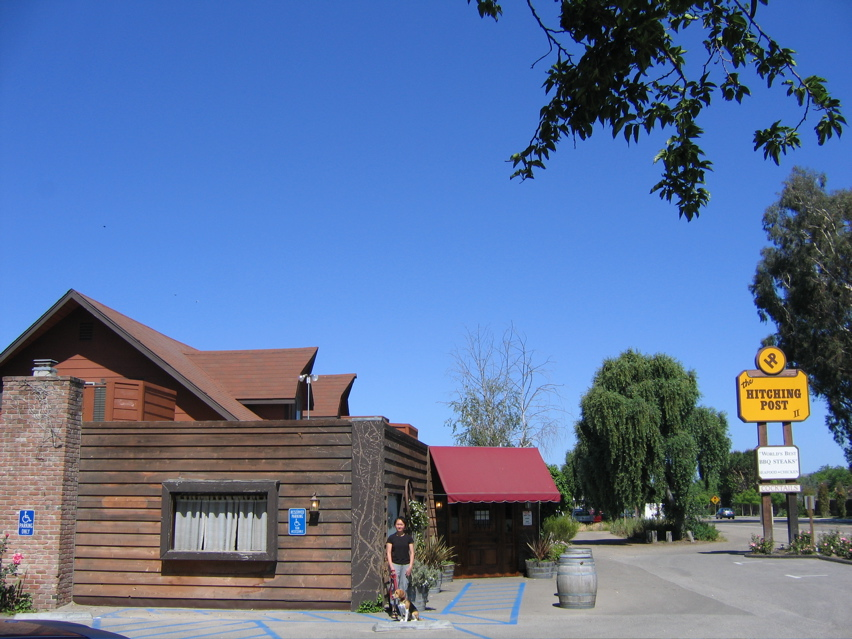

<--Previous Up Next-->

The Hitching Post
Huxley wasn't allowed in, but everyone knows this restaurant from that wine movie, so we took a picture anyway. A steak dinner and plenty of wine after driving all day Thursday wiped out Penny and I; Huxley guarded us while we napped in the car. We awoke in the wee hours to the shrieks of the ostriches on the farm next door, like angry rusted hinges. Huxley was still on the job and hadn't eaten our faces off. Good boy!